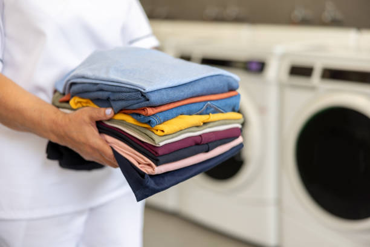
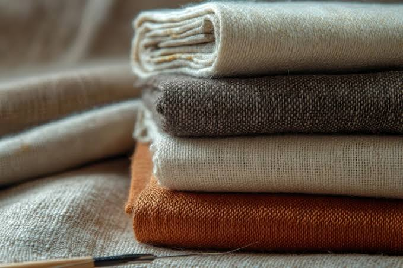
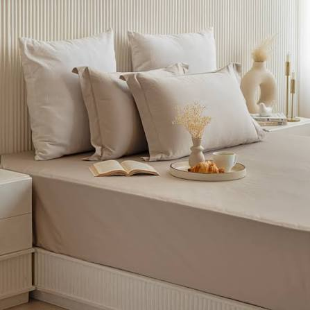
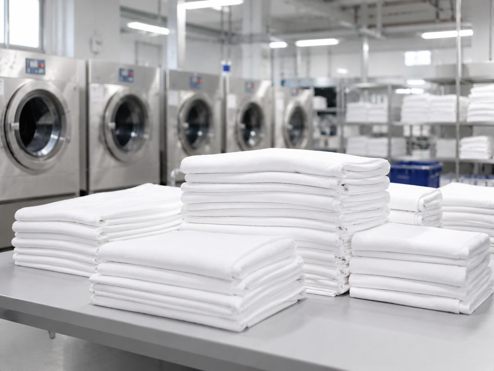

01
Hotel Linen Care
More professional cleaning and finishing for bed sheets, pillowcases, towels and everyday hospitality linen.
Discuss This ServiceFrom everyday hotel linens to specialist fabric care, our services help your business maintain clean, fresh and professionally presented textiles.
More professional cleaning and finishing for bed sheets, pillowcases, towels and everyday hospitality linen.
Discuss This Service
Linen care designed around healthcare requirements, with hygiene-focused processing and careful handling.
Discuss This Service
Keep staff uniforms clean, fresh and ready for daily use with dependable commercial laundry support.
Discuss This Service
Careful handling for selected specialty textiles, based on fabric type and appropriate cleaning requirements.
Discuss This ServiceFrom scheduled collection to delivery-ready linen, our process is designed to make commercial laundry easier to manage for your business.
We coordinate collection schedules around your business requirements and linen volumes.
Each load receives appropriate care according to the fabric type and cleaning requirements.
Cleaned items are checked for cleanliness, presentation and agreed quality standards.
Linen is organized and prepared for delivery according to the agreed service schedule.
Need a recurring pickup plan? Discuss your requirements with us.
Care in Every Detail
Commercial laundry is about more than clean fabric. It's about consistent presentation, appropriate handling and dependable care for the textiles your business relies on.
Cleaning methods selected according to fabric type and care requirements.
Appropriate handling and cleaning procedures suited to the service needs.
Attention to neatness and presentation for linen ready for business use.
Inspection against applicable cleanliness, finishing and service requirements.
Every industry has different linen demands. We help businesses manage their laundry needs with practical, professional service solutions.

01Keep guest rooms and hospitality spaces ready with professional care for bed linen, towels and other washable textiles.
Explore Hotel SolutionsSupport day-to-day linen requirements with appropriate cleaning, careful handling and service coordination for healthcare settings.
Explore Healthcare SolutionsManage all uniforms, reusable textiles and recurring laundry needs with a service approach suited to your operations.
Explore Business SolutionsLaundry demands can change from day to day. We work with your business to understand linen volumes, collection needs and delivery expectations so service planning fits your operations.
Discuss a regular pickup schedule that works with your business routine.
Plan service requirements around the type and volume of linen you handle.
Coordinate delivery expectations and service details with your team.

Reliable Care. Thoughtful Planning.
Let's discuss your linen requirements, collection schedule and service needs to find the right commercial laundry solution for your business.